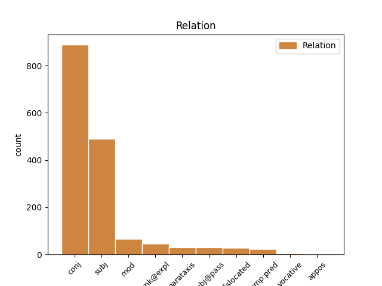

Distribution of features within this leaf

Agreement Rules sorted by frequency.
- When the dependent token is the conjunct(conj) of the head token, and the head token is VERB and the dependent token is VERB.
1 guþ _ _ _ _ 0 _ _ _
2 andhaitand and-haitan VERB V- Mood=Ind|Number=Plur|Person=3|Tense=Pres|VerbForm=Fin|Voice=Act 0 _ _ _
3 kunnan _ _ _ _ 0 _ _ _
4 iþ _ _ _ _ 0 _ _ _
5 waurstwam _ _ _ _ 0 _ _ _
6 inwidand in-widan VERB V- Mood=Ind|Number=Plur|Person=3|Tense=Pres|VerbForm=Fin|Voice=Act 2 conj _ ref=TIT_1.16
7 andasetjai _ _ _ _ 0 _ _ _
8 wisandans _ _ _ _ 0 _ _ _
9 jah _ _ _ _ 0 _ _ _
10 ungalaubjandans _ _ _ _ 0 _ _ _
11 jah _ _ _ _ 0 _ _ _
12 du _ _ _ _ 0 _ _ _
13 allamma _ _ _ _ 0 _ _ _
14 waurstwe _ _ _ _ 0 _ _ _
15 godaize _ _ _ _ 0 _ _ _
16 uskusanai _ _ _ _ 0 _ _ _
1 Iþ _ _ _ _ 0 _ _ _
2 þu þu PRON Pp Case=Nom|Gender=Masc|Number=Sing|Person=2|PronType=Prs 3 subj _ ref=TIT_2.1
3 rodei rodjan VERB V- Mood=Imp|Number=Sing|Person=2|Tense=Pres|VerbForm=Fin|Voice=Act 0 _ _ _
4 þatei _ _ _ _ 0 _ _ _
5 gadof _ _ _ _ 0 _ _ _
6 ist _ _ _ _ 0 _ _ _
7 þizai _ _ _ _ 0 _ _ _
8 hailon _ _ _ _ 0 _ _ _
9 laiseinai _ _ _ _ 0 _ _ _
1 iþ _ _ _ _ 0 _ _ _
2 þu þu PRON Pp Case=Nom|Gender=Masc|Number=Sing|Person=2|PronType=Prs 4 subj _ ref=2TIM_4.5
3 andaþahts _ _ _ _ 0 _ _ _
4 sijais wisan AUX V- Mood=Opt|Number=Sing|Person=2|Tense=Pres|VerbForm=Fin|Voice=Act 0 _ _ _
5 in _ _ _ _ 0 _ _ _
6 allaim _ _ _ _ 0 _ _ _
1 aþþan _ _ _ _ 0 _ _ _
2 þaiei _ _ _ _ 0 _ _ _
3 wileina wiljan VERB V- Mood=Ind|Number=Plur|Person=3|Tense=Pres|VerbForm=Fin|Voice=Act 6 subj _ ref=1TIM_6.9
4 gabigai _ _ _ _ 0 _ _ _
5 wairþan _ _ _ _ 0 _ _ _
6 atdriusand at-driusan VERB V- Mood=Ind|Number=Plur|Person=3|Tense=Pres|VerbForm=Fin|Voice=Act 0 _ _ _
7 in _ _ _ _ 0 _ _ _
8 fraistubnja _ _ _ _ 0 _ _ _
9 jah _ _ _ _ 0 _ _ _
10 hlamma _ _ _ _ 0 _ _ _
11 unhulþins _ _ _ _ 0 _ _ _
12 jah _ _ _ _ 0 _ _ _
13 lustuns _ _ _ _ 0 _ _ _
14 managans _ _ _ _ 0 _ _ _
15 unnutjans _ _ _ _ 0 _ _ _
16 jah _ _ _ _ 0 _ _ _
17 skaþulans _ _ _ _ 0 _ _ _
18 þaiei _ _ _ _ 0 _ _ _
19 saggqjand _ _ _ _ 0 _ _ _
20 mans _ _ _ _ 0 _ _ _
21 in _ _ _ _ 0 _ _ _
22 frawardein _ _ _ _ 0 _ _ _
23 jah _ _ _ _ 0 _ _ _
24 fralust _ _ _ _ 0 _ _ _
1 wairþiþ _ _ _ _ 0 _ _ _
2 mel _ _ _ _ 0 _ _ _
3 þan _ _ _ _ 0 _ _ _
4 haila _ _ _ _ 0 _ _ _
5 laisein _ _ _ _ 0 _ _ _
6 ni _ _ _ _ 0 _ _ _
7 usþuland _ _ _ _ 0 _ _ _
8 ak _ _ _ _ 0 _ _ _
9 du _ _ _ _ 0 _ _ _
10 seinaim _ _ _ _ 0 _ _ _
11 lustum _ _ _ _ 0 _ _ _
12 gadragand _ _ _ _ 0 _ _ _
13 sis _ _ _ _ 0 _ _ _
14 laisarjans _ _ _ _ 0 _ _ _
15 suþjandans _ _ _ _ 0 _ _ _
16 hausein _ _ _ _ 0 _ _ _
17 aþþan _ _ _ _ 0 _ _ _
18 af _ _ _ _ 0 _ _ _
19 sunjai _ _ _ _ 0 _ _ _
20 hausein _ _ _ _ 0 _ _ _
21 afwandjand _ _ _ _ 0 _ _ _
22 iþ _ _ _ _ 0 _ _ _
23 du _ _ _ _ 0 _ _ _
24 spillam _ _ _ _ 0 _ _ _
25 gawandjand ga-wandjan VERB V- Mood=Ind|Number=Plur|Person=3|Tense=Pres|VerbForm=Fin|Voice=Act 0 _ _ _
26 sik sik PRON Pk Case=Acc|Gender=Masc|Number=Plur|Person=3|PronType=Prs|Reflex=Yes 25 unk@expl _ ref=2TIM_4.4
1 aþþan _ _ _ _ 0 _ _ _
2 jabai _ _ _ _ 0 _ _ _
3 ƕas _ _ _ _ 0 _ _ _
4 swesaim _ _ _ _ 0 _ _ _
5 þishun _ _ _ _ 0 _ _ _
6 ingardjam _ _ _ _ 0 _ _ _
7 ni _ _ _ _ 0 _ _ _
8 gaþlaihiþ _ _ _ _ 0 _ _ _
9 galaubein _ _ _ _ 0 _ _ _
10 inwidiþ in-widan VERB V- Mood=Ind|Number=Sing|Person=3|Tense=Pres|VerbForm=Fin|Voice=Act 0 _ _ _
11 jah _ _ _ _ 0 _ _ _
12 ist wisan AUX V- Mood=Ind|Number=Sing|Person=3|Tense=Pres|VerbForm=Fin|Voice=Act 10 conj _ LId=1|ref=1TIM_5.8
13 ungalaubjandin _ _ _ _ 0 _ _ _
14 wairsiza _ _ _ _ 0 _ _ _
1 ni _ _ _ _ 0 _ _ _
2 ainshun _ _ _ _ 0 _ _ _
3 drauhtinonds _ _ _ _ 0 _ _ _
4 fraujin _ _ _ _ 0 _ _ _
5 dugawindiþ _ _ _ _ 0 _ _ _
6 sik _ _ _ _ 0 _ _ _
7 gawaurkjam _ _ _ _ 0 _ _ _
8 þizos _ _ _ _ 0 _ _ _
9 aldais _ _ _ _ 0 _ _ _
10 ei _ _ _ _ 0 _ _ _
11 galeikai ga-leikan VERB V- Mood=Opt|Number=Sing|Person=3|Tense=Pres|VerbForm=Fin|Voice=Act 0 _ _ _
12 þammei _ _ _ _ 0 _ _ _
13 drauhtinoþ drauhtinon VERB V- Mood=Ind|Number=Sing|Person=3|Tense=Pres|VerbForm=Fin|Voice=Act 11 mod _ ref=2TIM_2.4
1 swaswe _ _ _ _ 0 _ _ _
2 ganemuþ _ _ _ _ 0 _ _ _
3 at _ _ _ _ 0 _ _ _
4 Aipafrin _ _ _ _ 0 _ _ _
5 þamma _ _ _ _ 0 _ _ _
6 liubin _ _ _ _ 0 _ _ _
7 gaskalkja _ _ _ _ 0 _ _ _
8 unsaramma _ _ _ _ 0 _ _ _
9 saei _ _ _ _ 0 _ _ _
10 ist wisan AUX V- Mood=Ind|Number=Sing|Person=3|Tense=Pres|VerbForm=Fin|Voice=Act 0 _ _ _
11 triggws _ _ _ _ 0 _ _ _
12 faur _ _ _ _ 0 _ _ _
13 izwis _ _ _ _ 0 _ _ _
14 andbahts _ _ _ _ 0 _ _ _
15 Xristaus _ _ _ _ 0 _ _ _
16 Iesuis _ _ _ _ 0 _ _ _
17 saei _ _ _ _ 0 _ _ _
18 jah _ _ _ _ 0 _ _ _
19 gakannida ga-kannjan VERB V- Mood=Ind|Number=Sing|Person=3|Tense=Past|VerbForm=Fin|Voice=Act 10 conj _ ref=COL_1.8
20 uns _ _ _ _ 0 _ _ _
21 izwara _ _ _ _ 0 _ _ _
22 friaþwa _ _ _ _ 0 _ _ _
23 in _ _ _ _ 0 _ _ _
24 ahmin _ _ _ _ 0 _ _ _
1 aþþan _ _ _ _ 0 _ _ _
2 ik ik PRON Pp Case=Nom|Gender=Masc|Number=Sing|Person=1|PronType=Prs 4 subj@pass _ ref=2TIM_4.6
3 ju _ _ _ _ 0 _ _ _
4 hunsljada hunsljan VERB V- Mood=Ind|Number=Sing|Person=1|Tense=Pres|VerbForm=Fin|Voice=Pass 0 _ _ _
5 jah _ _ _ _ 0 _ _ _
6 mel _ _ _ _ 0 _ _ _
7 meinaizos _ _ _ _ 0 _ _ _
8 diswissais _ _ _ _ 0 _ _ _
9 atist _ _ _ _ 0 _ _ _
1 unte _ _ _ _ 0 _ _ _
2 us _ _ _ _ 0 _ _ _
3 þaim _ _ _ _ 0 _ _ _
4 sind wisan AUX V- Mood=Ind|Number=Plur|Person=3|Tense=Pres|VerbForm=Fin|Voice=Act 0 _ _ _
5 þaiei _ _ _ _ 0 _ _ _
6 sliupand sliupan VERB V- Mood=Ind|Number=Plur|Person=3|Tense=Pres|VerbForm=Fin|Voice=Act 4 subj _ ref=2TIM_3.6
7 in _ _ _ _ 0 _ _ _
8 gardins _ _ _ _ 0 _ _ _
9 jah _ _ _ _ 0 _ _ _
10 frahunþana _ _ _ _ 0 _ _ _
11 tiuhand _ _ _ _ 0 _ _ _
12 qineina _ _ _ _ 0 _ _ _
13 afhlaþana _ _ _ _ 0 _ _ _
14 frawaurhtim _ _ _ _ 0 _ _ _
15 þoei _ _ _ _ 0 _ _ _
16 tiuhanda _ _ _ _ 0 _ _ _
17 du _ _ _ _ 0 _ _ _
18 lustum _ _ _ _ 0 _ _ _
19 missaleikaim _ _ _ _ 0 _ _ _
20 sinteino _ _ _ _ 0 _ _ _
21 laisjandona _ _ _ _ 0 _ _ _
22 sik _ _ _ _ 0 _ _ _
23 jan _ _ _ _ 0 _ _ _
24 ni _ _ _ _ 0 _ _ _
25 aiw _ _ _ _ 0 _ _ _
26 ƕanhun _ _ _ _ 0 _ _ _
27 in _ _ _ _ 0 _ _ _
28 ufkunþja _ _ _ _ 0 _ _ _
29 sunjos _ _ _ _ 0 _ _ _
30 qiman _ _ _ _ 0 _ _ _
31 mahteiga _ _ _ _ 0 _ _ _
1 jah _ _ _ _ 0 _ _ _
2 izwis _ _ _ _ 0 _ _ _
3 simle _ _ _ _ 0 _ _ _
4 wisandans _ _ _ _ 0 _ _ _
5 framaþidans _ _ _ _ 0 _ _ _
6 jah _ _ _ _ 0 _ _ _
7 fijands _ _ _ _ 0 _ _ _
8 gahugdai _ _ _ _ 0 _ _ _
9 in _ _ _ _ 0 _ _ _
10 waurstwam _ _ _ _ 0 _ _ _
11 ubilaim _ _ _ _ 0 _ _ _
12 iþ _ _ _ _ 0 _ _ _
13 nu _ _ _ _ 0 _ _ _
14 gafriþodai _ _ _ _ 0 _ _ _
15 in _ _ _ _ 0 _ _ _
16 leika _ _ _ _ 0 _ _ _
17 mammons _ _ _ _ 0 _ _ _
18 is _ _ _ _ 0 _ _ _
19 þairh _ _ _ _ 0 _ _ _
20 dauþu _ _ _ _ 0 _ _ _
21 du _ _ _ _ 0 _ _ _
22 atsatjan _ _ _ _ 0 _ _ _
23 izwis _ _ _ _ 0 _ _ _
24 weihans _ _ _ _ 0 _ _ _
25 jah _ _ _ _ 0 _ _ _
26 unwammans _ _ _ _ 0 _ _ _
27 jah _ _ _ _ 0 _ _ _
28 usfairinans _ _ _ _ 0 _ _ _
29 faura _ _ _ _ 0 _ _ _
30 imma _ _ _ _ 0 _ _ _
31 jabai _ _ _ _ 0 _ _ _
32 sweþauh _ _ _ _ 0 _ _ _
33 þairhwisiþ _ _ _ _ 0 _ _ _
34 in _ _ _ _ 0 _ _ _
35 galaubeinai _ _ _ _ 0 _ _ _
36 gaþwastidai _ _ _ _ 0 _ _ _
37 jah _ _ _ _ 0 _ _ _
38 gatulgidai _ _ _ _ 0 _ _ _
39 jah _ _ _ _ 0 _ _ _
40 ni _ _ _ _ 0 _ _ _
41 afwagidai _ _ _ _ 0 _ _ _
42 af _ _ _ _ 0 _ _ _
43 wenai _ _ _ _ 0 _ _ _
44 aiwaggeljons _ _ _ _ 0 _ _ _
45 þoei _ _ _ _ 0 _ _ _
46 hausideduþ _ _ _ _ 0 _ _ _
47 sei _ _ _ _ 0 _ _ _
48 merida merjan VERB V- Mood=Ind|Number=Sing|Person=3|Tense=Past|VerbForm=Fin|Voice=Act 49 comp:pred _ ref=COL_1.23
49 ist wisan AUX V- Mood=Ind|Number=Sing|Person=3|Tense=Pres|VerbForm=Fin|Voice=Act 0 _ _ _
50 in _ _ _ _ 0 _ _ _
51 alla _ _ _ _ 0 _ _ _
52 gaskaft _ _ _ _ 0 _ _ _
53 þo _ _ _ _ 0 _ _ _
54 uf _ _ _ _ 0 _ _ _
55 himina _ _ _ _ 0 _ _ _
56 þizozei _ _ _ _ 0 _ _ _
57 warþ _ _ _ _ 0 _ _ _
58 ik _ _ _ _ 0 _ _ _
59 Pawlus _ _ _ _ 0 _ _ _
60 andbahts _ _ _ _ 0 _ _ _
1 aþþan _ _ _ _ 0 _ _ _
2 leikeina _ _ _ _ 0 _ _ _
3 usþroþeins _ _ _ _ 0 _ _ _
4 du _ _ _ _ 0 _ _ _
5 fawamma _ _ _ _ 0 _ _ _
6 ist wisan AUX V- Mood=Ind|Number=Sing|Person=3|Tense=Pres|VerbForm=Fin|Voice=Act 0 _ _ _
7 bruks _ _ _ _ 0 _ _ _
8 iþ _ _ _ _ 0 _ _ _
9 gagudei _ _ _ _ 0 _ _ _
10 du _ _ _ _ 0 _ _ _
11 allamma _ _ _ _ 0 _ _ _
12 ist wisan AUX V- Mood=Ind|Number=Sing|Person=3|Tense=Pres|VerbForm=Fin|Voice=Act 6 conj _ LId=1|ref=1TIM_4.8
13 bruks _ _ _ _ 0 _ _ _
14 gahaita _ _ _ _ 0 _ _ _
15 habandei _ _ _ _ 0 _ _ _
16 libainais _ _ _ _ 0 _ _ _
17 þizos _ _ _ _ 0 _ _ _
18 nu _ _ _ _ 0 _ _ _
19 jah _ _ _ _ 0 _ _ _
20 þizos _ _ _ _ 0 _ _ _
21 anawairþons _ _ _ _ 0 _ _ _
1 þannu _ _ _ _ 0 _ _ _
2 nu _ _ _ _ 0 _ _ _
3 broþrjus _ _ _ _ 0 _ _ _
4 anahaitam _ _ _ _ 0 _ _ _
5 bidai _ _ _ _ 0 _ _ _
6 izwis _ _ _ _ 0 _ _ _
7 jah _ _ _ _ 0 _ _ _
8 bidjam _ _ _ _ 0 _ _ _
9 in _ _ _ _ 0 _ _ _
10 fraujin _ _ _ _ 0 _ _ _
11 Iesua _ _ _ _ 0 _ _ _
12 ei _ _ _ _ 0 _ _ _
13 swaswe _ _ _ _ 0 _ _ _
14 andnemuþ and-niman VERB V- Mood=Ind|Number=Plur|Person=2|Tense=Past|VerbForm=Fin|Voice=Act 25 dislocated _ ref=1THESS_4.1
15 at _ _ _ _ 0 _ _ _
16 uns _ _ _ _ 0 _ _ _
17 ƕaiwa _ _ _ _ 0 _ _ _
18 skuluþ _ _ _ _ 0 _ _ _
19 gaggan _ _ _ _ 0 _ _ _
20 jah _ _ _ _ 0 _ _ _
21 galeikan _ _ _ _ 0 _ _ _
22 guda _ _ _ _ 0 _ _ _
23 swa _ _ _ _ 0 _ _ _
24 jah _ _ _ _ 0 _ _ _
25 gaggaiþ gaggan VERB V- Mood=Opt|Number=Plur|Person=2|Tense=Pres|VerbForm=Fin|Voice=Act 0 _ _ _
26 jah _ _ _ _ 0 _ _ _
27 gaaukaiþ _ _ _ _ 0 _ _ _
28 mais _ _ _ _ 0 _ _ _
1 aþþan _ _ _ _ 0 _ _ _
2 tulgus _ _ _ _ 0 _ _ _
3 grunduwaddjus _ _ _ _ 0 _ _ _
4 gudis _ _ _ _ 0 _ _ _
5 standiþ standan VERB V- Mood=Ind|Number=Sing|Person=3|Tense=Pres|VerbForm=Fin|Voice=Act 0 _ _ _
6 habands _ _ _ _ 0 _ _ _
7 sigljo _ _ _ _ 0 _ _ _
8 þata _ _ _ _ 0 _ _ _
9 kunþa _ _ _ _ 0 _ _ _
10 frauja _ _ _ _ 0 _ _ _
11 þans _ _ _ _ 0 _ _ _
12 þaiei _ _ _ _ 0 _ _ _
13 sind _ _ _ _ 0 _ _ _
14 is _ _ _ _ 0 _ _ _
15 jah _ _ _ _ 0 _ _ _
16 afstandai af-standan VERB V- Mood=Opt|Number=Sing|Person=3|Tense=Pres|VerbForm=Fin|Voice=Act 5 parataxis _ ref=2TIM_2.19
17 af _ _ _ _ 0 _ _ _
18 unselein _ _ _ _ 0 _ _ _
19 ƕazuh _ _ _ _ 0 _ _ _
20 saei _ _ _ _ 0 _ _ _
21 namnjai _ _ _ _ 0 _ _ _
22 namo _ _ _ _ 0 _ _ _
23 fraujins _ _ _ _ 0 _ _ _
1 akei _ _ _ _ 0 _ _ _
2 ni _ _ _ _ 0 _ _ _
3 þeihand _ _ _ _ 0 _ _ _
4 du _ _ _ _ 0 _ _ _
5 filusnai _ _ _ _ 0 _ _ _
6 unte _ _ _ _ 0 _ _ _
7 unwiti _ _ _ _ 0 _ _ _
8 ize _ _ _ _ 0 _ _ _
9 swikunþ _ _ _ _ 0 _ _ _
10 wairþiþ wairþan VERB V- Mood=Ind|Number=Sing|Person=3|Tense=Pres|VerbForm=Fin|Voice=Act 0 _ _ _
11 allaim _ _ _ _ 0 _ _ _
12 swaswe _ _ _ _ 0 _ _ _
13 jah _ _ _ _ 0 _ _ _
14 jainaize _ _ _ _ 0 _ _ _
15 was wisan AUX V- Mood=Ind|Number=Sing|Person=3|Tense=Past|VerbForm=Fin|Voice=Act 10 mod _ LId=1|ref=2TIM_3.9
1 aþþan _ _ _ _ 0 _ _ _
2 soei _ _ _ _ 0 _ _ _
3 bi _ _ _ _ 0 _ _ _
4 sunjai _ _ _ _ 0 _ _ _
5 widuwo _ _ _ _ 0 _ _ _
6 ist wisan AUX V- Mood=Ind|Number=Sing|Person=3|Tense=Pres|VerbForm=Fin|Voice=Act 9 subj _ LId=1|ref=1TIM_5.5
7 jah _ _ _ _ 0 _ _ _
8 ainakla _ _ _ _ 0 _ _ _
9 wenida wenjan VERB V- Mood=Ind|Number=Sing|Person=3|Tense=Past|VerbForm=Fin|Voice=Act 0 _ _ _
10 du _ _ _ _ 0 _ _ _
11 guda _ _ _ _ 0 _ _ _
12 jah _ _ _ _ 0 _ _ _
13 þairhwisiþ _ _ _ _ 0 _ _ _
14 in _ _ _ _ 0 _ _ _
15 bidom _ _ _ _ 0 _ _ _
16 nahtam _ _ _ _ 0 _ _ _
17 jah _ _ _ _ 0 _ _ _
18 dagam _ _ _ _ 0 _ _ _
1 aþþan _ _ _ _ 0 _ _ _
2 bi _ _ _ _ 0 _ _ _
3 broþrulubon _ _ _ _ 0 _ _ _
4 ni _ _ _ _ 0 _ _ _
5 þaurbum _ _ _ _ 0 _ _ _
6 meljan _ _ _ _ 0 _ _ _
7 izwis _ _ _ _ 0 _ _ _
8 unte _ _ _ _ 0 _ _ _
9 silbans _ _ _ _ 0 _ _ _
10 jus jūs PRON Pp Case=Nom|Gender=Masc|Number=Plur|Person=2|PronType=Prs 14 subj@pass _ ref=1THESS_4.9
11 at _ _ _ _ 0 _ _ _
12 guda _ _ _ _ 0 _ _ _
13 uslaisidai _ _ _ _ 0 _ _ _
14 sijuþ wisan AUX V- Mood=Ind|Number=Plur|Person=2|Tense=Pres|VerbForm=Fin|Voice=Act 0 _ _ _
15 du _ _ _ _ 0 _ _ _
16 frijon _ _ _ _ 0 _ _ _
17 izwis _ _ _ _ 0 _ _ _
18 misso _ _ _ _ 0 _ _ _
1 saei _ _ _ _ 0 _ _ _
2 atstaig at-steigan VERB V- Mood=Ind|Number=Sing|Person=3|Tense=Past|VerbForm=Fin|Voice=Act 4 dislocated _ ref=EPH_4.10
3 sa _ _ _ _ 0 _ _ _
4 ist wisan AUX V- Mood=Ind|Number=Sing|Person=3|Tense=Pres|VerbForm=Fin|Voice=Act 0 _ _ _
5 jah _ _ _ _ 0 _ _ _
6 saei _ _ _ _ 0 _ _ _
7 usstaig _ _ _ _ 0 _ _ _
8 ufar _ _ _ _ 0 _ _ _
9 allans _ _ _ _ 0 _ _ _
10 himinans _ _ _ _ 0 _ _ _
11 ei _ _ _ _ 0 _ _ _
12 usfullidedi _ _ _ _ 0 _ _ _
13 allata _ _ _ _ 0 _ _ _
1 niba _ _ _ _ 0 _ _ _
2 saei _ _ _ _ 0 _ _ _
3 wisiþ wisan VERB V- Mood=Ind|Number=Sing|Person=3|Tense=Pres|VerbForm=Fin|Voice=Act 6 subj@pass _ LId=3|ref=JOHN_15.6
4 in _ _ _ _ 0 _ _ _
5 mis _ _ _ _ 0 _ _ _
6 uswairpada us-wairpan VERB V- Mood=Ind|Number=Sing|Person=3|Tense=Pres|VerbForm=Fin|Voice=Pass 0 _ _ _
7 ut _ _ _ _ 0 _ _ _
8 swe _ _ _ _ 0 _ _ _
9 weinatains _ _ _ _ 0 _ _ _
10 jah _ _ _ _ 0 _ _ _
11 gaþaursniþ _ _ _ _ 0 _ _ _
12 jah _ _ _ _ 0 _ _ _
13 galisada _ _ _ _ 0 _ _ _
14 jah _ _ _ _ 0 _ _ _
15 in _ _ _ _ 0 _ _ _
16 fon _ _ _ _ 0 _ _ _
17 galagjand _ _ _ _ 0 _ _ _
18 jah _ _ _ _ 0 _ _ _
19 inbrannjada _ _ _ _ 0 _ _ _
1 aþþan _ _ _ _ 0 _ _ _
2 tulgus _ _ _ _ 0 _ _ _
3 grunduwaddjus _ _ _ _ 0 _ _ _
4 gudis _ _ _ _ 0 _ _ _
5 standiþ _ _ _ _ 0 _ _ _
6 habands _ _ _ _ 0 _ _ _
7 sigljo _ _ _ _ 0 _ _ _
8 þata _ _ _ _ 0 _ _ _
9 kunþa _ _ _ _ 0 _ _ _
10 frauja _ _ _ _ 0 _ _ _
11 þans _ _ _ _ 0 _ _ _
12 þaiei _ _ _ _ 0 _ _ _
13 sind wisan AUX V- Mood=Ind|Number=Plur|Person=3|Tense=Pres|VerbForm=Fin|Voice=Act 0 _ _ _
14 is is PRON Pp Case=Gen|Gender=Masc|Number=Sing|Person=3|PronType=Prs 13 comp:pred _ ref=2TIM_2.19
15 jah _ _ _ _ 0 _ _ _
16 afstandai _ _ _ _ 0 _ _ _
17 af _ _ _ _ 0 _ _ _
18 unselein _ _ _ _ 0 _ _ _
19 ƕazuh _ _ _ _ 0 _ _ _
20 saei _ _ _ _ 0 _ _ _
21 namnjai _ _ _ _ 0 _ _ _
22 namo _ _ _ _ 0 _ _ _
23 fraujins _ _ _ _ 0 _ _ _
1 aþþan _ _ _ _ 0 _ _ _
2 þaiei _ _ _ _ 0 _ _ _
3 galaubjandans _ _ _ _ 0 _ _ _
4 haband _ _ _ _ 0 _ _ _
5 fraujans _ _ _ _ 0 _ _ _
6 ni _ _ _ _ 0 _ _ _
7 frakunneina _ _ _ _ 0 _ _ _
8 unte _ _ _ _ 0 _ _ _
9 broþrjus _ _ _ _ 0 _ _ _
10 sind _ _ _ _ 0 _ _ _
11 ak _ _ _ _ 0 _ _ _
12 mais _ _ _ _ 0 _ _ _
13 skalkinona _ _ _ _ 0 _ _ _
14 unte _ _ _ _ 0 _ _ _
15 galaubjandans _ _ _ _ 0 _ _ _
16 sind wisan AUX V- Mood=Ind|Number=Plur|Person=3|Tense=Pres|VerbForm=Fin|Voice=Act 0 _ _ _
17 jah _ _ _ _ 0 _ _ _
18 liubai _ _ _ _ 0 _ _ _
19 þaiei _ _ _ _ 0 _ _ _
20 wailadedais _ _ _ _ 0 _ _ _
21 gadailans _ _ _ _ 0 _ _ _
22 sind wisan AUX V- Mood=Ind|Number=Plur|Person=3|Tense=Pres|VerbForm=Fin|Voice=Act 16 subj _ LId=1|ref=1TIM_6.2
1 jah _ _ _ _ 0 _ _ _
2 auk _ _ _ _ 0 _ _ _
3 þan _ _ _ _ 0 _ _ _
4 wesum _ _ _ _ 0 _ _ _
5 at _ _ _ _ 0 _ _ _
6 izwis _ _ _ _ 0 _ _ _
7 fauraqeþum _ _ _ _ 0 _ _ _
8 izwis _ _ _ _ 0 _ _ _
9 þatei _ _ _ _ 0 _ _ _
10 anawairþ _ _ _ _ 0 _ _ _
11 was wisan AUX V- Mood=Ind|Number=Sing|Person=3|Tense=Past|VerbForm=Fin|Voice=Act 0 _ _ _
12 uns _ _ _ _ 0 _ _ _
13 du _ _ _ _ 0 _ _ _
14 winnan _ _ _ _ 0 _ _ _
15 agliþos _ _ _ _ 0 _ _ _
16 swaswe _ _ _ _ 0 _ _ _
17 jah _ _ _ _ 0 _ _ _
18 warþ wairþan VERB V- Mood=Ind|Number=Sing|Person=3|Tense=Past|VerbForm=Fin|Voice=Act 11 mod _ ref=1THESS_3.4
19 jah _ _ _ _ 0 _ _ _
20 wituþ _ _ _ _ 0 _ _ _
1 unte _ _ _ _ 0 _ _ _
2 þos _ _ _ _ 0 _ _ _
3 raihtis _ _ _ _ 0 _ _ _
4 bokos _ _ _ _ 0 _ _ _
5 qiþand qiþan VERB V- Mood=Ind|Number=Plur|Person=3|Tense=Pres|VerbForm=Fin|Voice=Act 7 parataxis _ ref=2COR_10.10
6 kaurjos _ _ _ _ 0 _ _ _
7 sind wisan AUX V- Mood=Ind|Number=Plur|Person=3|Tense=Pres|VerbForm=Fin|Voice=Act 0 _ _ _
8 jah _ _ _ _ 0 _ _ _
9 swinþos _ _ _ _ 0 _ _ _
10 iþ _ _ _ _ 0 _ _ _
11 qums _ _ _ _ 0 _ _ _
12 leikis _ _ _ _ 0 _ _ _
13 lasiws _ _ _ _ 0 _ _ _
14 jah _ _ _ _ 0 _ _ _
15 waurd _ _ _ _ 0 _ _ _
16 frakunþ _ _ _ _ 0 _ _ _
1 unte _ _ _ _ 0 _ _ _
2 bi _ _ _ _ 0 _ _ _
3 andhuleinai _ _ _ _ 0 _ _ _
4 gakannida _ _ _ _ 0 _ _ _
5 was _ _ _ _ 0 _ _ _
6 mis _ _ _ _ 0 _ _ _
7 so _ _ _ _ 0 _ _ _
8 runa _ _ _ _ 0 _ _ _
9 swe _ _ _ _ 0 _ _ _
10 fauragamelida _ _ _ _ 0 _ _ _
11 in _ _ _ _ 0 _ _ _
12 leitilamma _ _ _ _ 0 _ _ _
13 duþþe _ _ _ _ 0 _ _ _
14 ei _ _ _ _ 0 _ _ _
15 siggwandans _ _ _ _ 0 _ _ _
16 mageiþ _ _ _ _ 0 _ _ _
17 fraþjan _ _ _ _ 0 _ _ _
18 frodein _ _ _ _ 0 _ _ _
19 meinai _ _ _ _ 0 _ _ _
20 in _ _ _ _ 0 _ _ _
21 runai _ _ _ _ 0 _ _ _
22 Xristaus _ _ _ _ 0 _ _ _
23 þatei _ _ _ _ 0 _ _ _
24 anþaraim _ _ _ _ 0 _ _ _
25 aldim _ _ _ _ 0 _ _ _
26 ni _ _ _ _ 0 _ _ _
27 kunþ _ _ _ _ 0 _ _ _
28 was wisan AUX V- Mood=Ind|Number=Sing|Person=3|Tense=Past|VerbForm=Fin|Voice=Act 0 _ _ _
29 sunum _ _ _ _ 0 _ _ _
30 manne _ _ _ _ 0 _ _ _
31 swaswe _ _ _ _ 0 _ _ _
32 nu _ _ _ _ 0 _ _ _
33 andhuliþ _ _ _ _ 0 _ _ _
34 ist wisan AUX V- Mood=Ind|Number=Sing|Person=3|Tense=Pres|VerbForm=Fin|Voice=Act 28 mod _ LId=1|ref=EPH_3.5
35 þaim _ _ _ _ 0 _ _ _
36 weiham _ _ _ _ 0 _ _ _
37 is _ _ _ _ 0 _ _ _
38 apaustaulum _ _ _ _ 0 _ _ _
39 jah _ _ _ _ 0 _ _ _
40 praufetum _ _ _ _ 0 _ _ _
41 in _ _ _ _ 0 _ _ _
42 ahmin _ _ _ _ 0 _ _ _
43 wisan _ _ _ _ 0 _ _ _
44 þiudos _ _ _ _ 0 _ _ _
45 gaarbjans _ _ _ _ 0 _ _ _
46 jah _ _ _ _ 0 _ _ _
47 galeikans _ _ _ _ 0 _ _ _
48 jah _ _ _ _ 0 _ _ _
49 gadailans _ _ _ _ 0 _ _ _
50 gahaitis _ _ _ _ 0 _ _ _
51 is _ _ _ _ 0 _ _ _
52 in _ _ _ _ 0 _ _ _
53 Xristau _ _ _ _ 0 _ _ _
54 Iesu _ _ _ _ 0 _ _ _
55 þairh _ _ _ _ 0 _ _ _
56 aiwaggeljon _ _ _ _ 0 _ _ _
57 þizozei _ _ _ _ 0 _ _ _
58 warþ _ _ _ _ 0 _ _ _
59 andbahts _ _ _ _ 0 _ _ _
60 ik _ _ _ _ 0 _ _ _
61 bi _ _ _ _ 0 _ _ _
62 gibai _ _ _ _ 0 _ _ _
63 anstais _ _ _ _ 0 _ _ _
64 gudis _ _ _ _ 0 _ _ _
65 þizai _ _ _ _ 0 _ _ _
66 gibanon _ _ _ _ 0 _ _ _
67 mis _ _ _ _ 0 _ _ _
68 bi _ _ _ _ 0 _ _ _
69 toja _ _ _ _ 0 _ _ _
70 mahtais _ _ _ _ 0 _ _ _
71 is _ _ _ _ 0 _ _ _
1 qiþiþ qiþan VERB V- Mood=Ind|Number=Plur|Person=2|Tense=Pres|VerbForm=Fin|Voice=Act 0 _ _ _
2 mis _ _ _ _ 0 _ _ _
3 jus jūs PRON Pp Case=Nom|Gender=Masc|Number=Plur|Person=2|PronType=Prs 1 vocative _ ref=GAL_4.21
4 uf _ _ _ _ 0 _ _ _
5 witoda _ _ _ _ 0 _ _ _
6 wiljandans _ _ _ _ 0 _ _ _
7 wisan _ _ _ _ 0 _ _ _
1 silba silba PRON Pk Case=Nom|Gender=Masc|Number=Sing|Person=3|PronType=Prs|Reflex=Yes 4 comp:pred _ ref=MARK_12.37
2 raihtis _ _ _ _ 0 _ _ _
3 Daweid _ _ _ _ 0 _ _ _
4 qiþiþ qiþan VERB V- Mood=Ind|Number=Sing|Person=3|Tense=Pres|VerbForm=Fin|Voice=Act 0 _ _ _
5 ina _ _ _ _ 0 _ _ _
6 fraujan _ _ _ _ 0 _ _ _
7 jah _ _ _ _ 0 _ _ _
8 ƕaþro _ _ _ _ 0 _ _ _
9 imma _ _ _ _ 0 _ _ _
10 sunus _ _ _ _ 0 _ _ _
11 ist _ _ _ _ 0 _ _ _
1 iþ _ _ _ _ 0 _ _ _
2 ƕazuh _ _ _ _ 0 _ _ _
3 saei _ _ _ _ 0 _ _ _
4 haifstjan _ _ _ _ 0 _ _ _
5 sniwiþ _ _ _ _ 0 _ _ _
6 allis _ _ _ _ 0 _ _ _
7 sik _ _ _ _ 0 _ _ _
8 gaþarbaiþ ga-þarban VERB V- Mood=Ind|Number=Sing|Person=3|Tense=Pres|VerbForm=Fin|Voice=Act 0 _ _ _
9 aþþan _ _ _ _ 0 _ _ _
10 eis is PRON Pp Case=Nom|Gender=Masc|Number=Plur|Person=3|PronType=Prs 8 appos _ ref=1COR_9.25
11 ei _ _ _ _ 0 _ _ _
12 riurjana _ _ _ _ 0 _ _ _
13 waip _ _ _ _ 0 _ _ _
14 nimaina _ _ _ _ 0 _ _ _
15 iþ _ _ _ _ 0 _ _ _
16 weis _ _ _ _ 0 _ _ _
17 unriurjana _ _ _ _ 0 _ _ _
1 ƕarjizuh _ _ _ _ 0 _ _ _
2 in _ _ _ _ 0 _ _ _
3 þammei _ _ _ _ 0 _ _ _
4 atlaþoþs _ _ _ _ 0 _ _ _
5 was wisan AUX V- Mood=Ind|Number=Sing|Person=3|Tense=Past|VerbForm=Fin|Voice=Act 9 dislocated _ LId=1|ref=1COR_7.24
6 broþrjus _ _ _ _ 0 _ _ _
7 in _ _ _ _ 0 _ _ _
8 þamma _ _ _ _ 0 _ _ _
9 gastandai ga-standan VERB V- Mood=Opt|Number=Sing|Person=3|Tense=Pres|VerbForm=Fin|Voice=Act 0 _ _ _
10 at _ _ _ _ 0 _ _ _
11 guda _ _ _ _ 0 _ _ _
1 Wesun wisan AUX V- Mood=Ind|Number=Plur|Person=3|Tense=Past|VerbForm=Fin|Voice=Act 0 _ _ _
2 uþ _ _ _ _ 0 _ _ _
3 þan _ _ _ _ 0 _ _ _
4 imma _ _ _ _ 0 _ _ _
5 neƕjandans _ _ _ _ 0 _ _ _
6 sik sik PRON Pk Case=Acc|Gender=Fem|Number=Sing|Person=3|PronType=Prs|Reflex=Yes 1 unk@expl _ ref=LUKE_15.1
7 allai _ _ _ _ 0 _ _ _
8 motarjos _ _ _ _ 0 _ _ _
9 jah _ _ _ _ 0 _ _ _
10 frawaurhtai _ _ _ _ 0 _ _ _
11 hausjan _ _ _ _ 0 _ _ _
12 imma _ _ _ _ 0 _ _ _
1 aþþan _ _ _ _ 0 _ _ _
2 anstai _ _ _ _ 0 _ _ _
3 gudis _ _ _ _ 0 _ _ _
4 im wisan AUX V- Mood=Ind|Number=Sing|Person=1|Tense=Pres|VerbForm=Fin|Voice=Act 0 _ _ _
5 saei _ _ _ _ 0 _ _ _
6 im wisan AUX V- Mood=Ind|Number=Sing|Person=1|Tense=Pres|VerbForm=Fin|Voice=Act 4 comp:pred _ LId=1|ref=1COR_15.10
7 jas _ _ _ _ 0 _ _ _
8 so _ _ _ _ 0 _ _ _
9 ansts _ _ _ _ 0 _ _ _
10 is _ _ _ _ 0 _ _ _
11 in _ _ _ _ 0 _ _ _
12 mis _ _ _ _ 0 _ _ _
13 halka _ _ _ _ 0 _ _ _
14 ni _ _ _ _ 0 _ _ _
15 warþ _ _ _ _ 0 _ _ _
16 ak _ _ _ _ 0 _ _ _
17 managizo _ _ _ _ 0 _ _ _
18 im _ _ _ _ 0 _ _ _
19 allaim _ _ _ _ 0 _ _ _
20 usaiwida _ _ _ _ 0 _ _ _
21 aþþan _ _ _ _ 0 _ _ _
22 ni _ _ _ _ 0 _ _ _
23 ik _ _ _ _ 0 _ _ _
24 ak _ _ _ _ 0 _ _ _
25 ansts _ _ _ _ 0 _ _ _
26 gudis _ _ _ _ 0 _ _ _
27 miþ _ _ _ _ 0 _ _ _
28 mis _ _ _ _ 0 _ _ _
1 unte _ _ _ _ 0 _ _ _
2 swaswe _ _ _ _ 0 _ _ _
3 ufarassus _ _ _ _ 0 _ _ _
4 ist wisan AUX V- Mood=Ind|Number=Sing|Person=3|Tense=Pres|VerbForm=Fin|Voice=Act 15 dislocated _ LId=1|ref=2COR_1.5
5 þulaine _ _ _ _ 0 _ _ _
6 Xristaus _ _ _ _ 0 _ _ _
7 in _ _ _ _ 0 _ _ _
8 uns _ _ _ _ 0 _ _ _
9 swa _ _ _ _ 0 _ _ _
10 jah _ _ _ _ 0 _ _ _
11 þairh _ _ _ _ 0 _ _ _
12 Xristu _ _ _ _ 0 _ _ _
13 ufar _ _ _ _ 0 _ _ _
14 filu _ _ _ _ 0 _ _ _
15 ist wisan AUX V- Mood=Ind|Number=Sing|Person=3|Tense=Pres|VerbForm=Fin|Voice=Act 0 _ _ _
16 jah _ _ _ _ 0 _ _ _
17 gaþrafsteins _ _ _ _ 0 _ _ _
18 unsara _ _ _ _ 0 _ _ _
1 aþþan _ _ _ _ 0 _ _ _
2 ni _ _ _ _ 0 _ _ _
3 uns _ _ _ _ 0 _ _ _
4 silbans _ _ _ _ 0 _ _ _
5 merjam merjan VERB V- Mood=Ind|Number=Plur|Person=1|Tense=Pres|VerbForm=Fin|Voice=Act 0 _ _ _
6 ak _ _ _ _ 0 _ _ _
7 Iesu _ _ _ _ 0 _ _ _
8 Xristu _ _ _ _ 0 _ _ _
9 fraujan _ _ _ _ 0 _ _ _
10 iþ _ _ _ _ 0 _ _ _
11 uns weis PRON Pp Case=Acc|Gender=Masc|Number=Plur|Person=1|PronType=Prs 5 conj _ ref=2COR_4.5
12 skalkans _ _ _ _ 0 _ _ _
13 izwarans _ _ _ _ 0 _ _ _
14 in _ _ _ _ 0 _ _ _
15 Iesuis _ _ _ _ 0 _ _ _
1 unte _ _ _ _ 0 _ _ _
2 og _ _ _ _ 0 _ _ _
3 ibai _ _ _ _ 0 _ _ _
4 aufto _ _ _ _ 0 _ _ _
5 qimands _ _ _ _ 0 _ _ _
6 ni _ _ _ _ 0 _ _ _
7 swaleikans _ _ _ _ 0 _ _ _
8 swe _ _ _ _ 0 _ _ _
9 wiljau wiljan VERB V- Mood=Ind|Number=Sing|Person=1|Tense=Pres|VerbForm=Fin|Voice=Act 10 comp:pred _ ref=2COR_12.20
10 bigitau bi-gitan VERB V- Mood=Opt|Number=Sing|Person=1|Tense=Pres|VerbForm=Fin|Voice=Act 0 _ _ _
11 izwis _ _ _ _ 0 _ _ _
12 jah _ _ _ _ 0 _ _ _
13 ik _ _ _ _ 0 _ _ _
14 bigitaidau _ _ _ _ 0 _ _ _
15 izwis _ _ _ _ 0 _ _ _
16 swaleiks _ _ _ _ 0 _ _ _
17 swe _ _ _ _ 0 _ _ _
18 ni _ _ _ _ 0 _ _ _
19 wileiþ _ _ _ _ 0 _ _ _
20 mik _ _ _ _ 0 _ _ _
21 ibai _ _ _ _ 0 _ _ _
22 aufto _ _ _ _ 0 _ _ _
23 þwairheins _ _ _ _ 0 _ _ _
24 aljan _ _ _ _ 0 _ _ _
25 jiukos _ _ _ _ 0 _ _ _
26 bihaita _ _ _ _ 0 _ _ _
27 birodeinos _ _ _ _ 0 _ _ _
28 haifsteis _ _ _ _ 0 _ _ _
29 ufswalleinos _ _ _ _ 0 _ _ _
30 drobnans _ _ _ _ 0 _ _ _
Disagree Examples:
1 duƕe _ _ _ _ 0 _ _ _
2 weis _ _ _ _ 0 _ _ _
3 jah _ _ _ _ 0 _ _ _
4 Fareisaieis _ _ _ _ 0 _ _ _
5 fastam fastan VERB V- Mood=Ind|Number=Plur|Person=1|Tense=Pres|VerbForm=Fin|Voice=Act 0 _ _ _
6 filu _ _ _ _ 0 _ _ _
7 iþ _ _ _ _ 0 _ _ _
8 þai _ _ _ _ 0 _ _ _
9 siponjos _ _ _ _ 0 _ _ _
10 þeinai _ _ _ _ 0 _ _ _
11 ni _ _ _ _ 0 _ _ _
12 fastand fastan VERB V- Mood=Ind|Number=Plur|Person=3|Tense=Pres|VerbForm=Fin|Voice=Act 5 conj _ ref=MATT_9.14
1 akei _ _ _ _ 0 _ _ _
2 qimands _ _ _ _ 0 _ _ _
3 atlagei at-lagjan VERB V- Mood=Imp|Number=Sing|Person=2|Tense=Pres|VerbForm=Fin|Voice=Act 0 _ _ _
4 handu _ _ _ _ 0 _ _ _
5 þeina _ _ _ _ 0 _ _ _
6 ana _ _ _ _ 0 _ _ _
7 ija _ _ _ _ 0 _ _ _
8 jah _ _ _ _ 0 _ _ _
9 libaiþ liban VERB V- Mood=Ind|Number=Sing|Person=3|Tense=Pres|VerbForm=Fin|Voice=Act 3 conj _ ref=MATT_9.18
1 jah _ _ _ _ 0 _ _ _
2 saei _ _ _ _ 0 _ _ _
3 gadragkeiþ _ _ _ _ 0 _ _ _
4 ainana _ _ _ _ 0 _ _ _
5 þize _ _ _ _ 0 _ _ _
6 minnistane _ _ _ _ 0 _ _ _
7 stikla _ _ _ _ 0 _ _ _
8 kaldis _ _ _ _ 0 _ _ _
9 watins _ _ _ _ 0 _ _ _
10 þatainei _ _ _ _ 0 _ _ _
11 in _ _ _ _ 0 _ _ _
12 namin _ _ _ _ 0 _ _ _
13 siponeis _ _ _ _ 0 _ _ _
14 amen _ _ _ _ 0 _ _ _
15 qiþa qiþan VERB V- Mood=Ind|Number=Sing|Person=1|Tense=Pres|VerbForm=Fin|Voice=Act 19 parataxis _ ref=MATT_10.42
16 izwis _ _ _ _ 0 _ _ _
17 ei _ _ _ _ 0 _ _ _
18 ni _ _ _ _ 0 _ _ _
19 fraqisteiþ fra-qistjan VERB V- Mood=Ind|Number=Sing|Person=3|Tense=Pres|VerbForm=Fin|Voice=Act 0 _ _ _
20 mizdon _ _ _ _ 0 _ _ _
21 seinai _ _ _ _ 0 _ _ _
1 þu _ _ _ _ 0 _ _ _
2 u _ _ _ _ 0 _ _ _
3 is wisan AUX V- Mood=Ind|Number=Sing|Person=2|Tense=Pres|VerbForm=Fin|Voice=Act 0 _ _ _
4 sa _ _ _ _ 0 _ _ _
5 qimanda _ _ _ _ 0 _ _ _
6 þau _ _ _ _ 0 _ _ _
7 anþariz _ _ _ _ 0 _ _ _
8 uh _ _ _ _ 0 _ _ _
9 beidaima beidan VERB V- Mood=Opt|Number=Plur|Person=1|Tense=Pres|VerbForm=Fin|Voice=Act 3 conj _ ref=MATT_11.3
1 swiglodedum swiglon VERB V- Mood=Ind|Number=Plur|Person=1|Tense=Past|VerbForm=Fin|Voice=Act 0 _ _ _
2 izwis _ _ _ _ 0 _ _ _
3 jah _ _ _ _ 0 _ _ _
4 ni _ _ _ _ 0 _ _ _
5 plinsideduþ plinsjan VERB V- Mood=Ind|Number=Plur|Person=2|Tense=Past|VerbForm=Fin|Voice=Act 1 conj _ ref=MATT_11.17